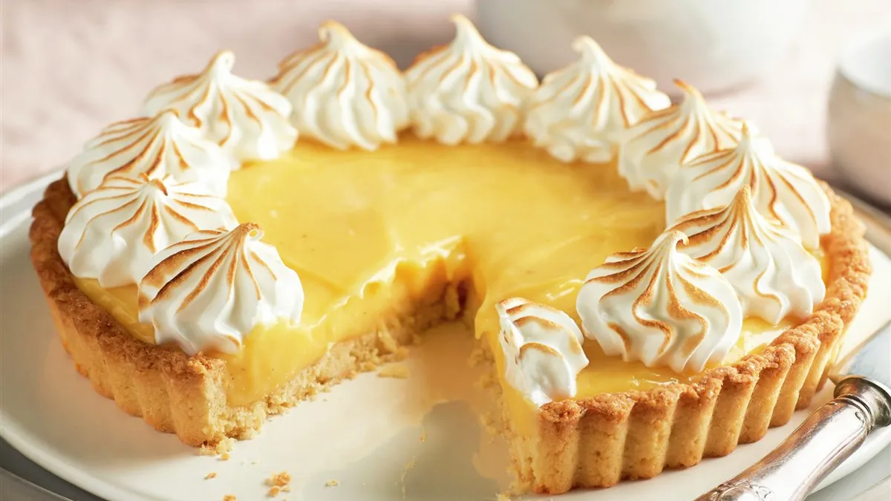

Recetas Caseras
Inicio
Chocolina
Turron de Quaker
Tiramisu
Lemon Pie
Lemon Pie

Ingredientes para la masa:
200 g Harina 0000
100 g Manteca
4 cdas Azúcar
1 Yema
1/2 Ralladura de limón
Receta de masa:
1- Mezclar los Ingredientes de la masa en el orden que están anotados. Recomendaciones: tener la Manteca a temperatura ambiente. Rallar la mitad del limón bien chiquito. Guardar la clara (luego se usa en el merengue).
2- Va a quedar una masa bastante grasosa, la vamos a estirar en una tartera con la ayuda de un film! colocar el film (o un nylon) sobre la masa y estirar (con un palo de amasar o con las manos) ! eso va a ayudar que la masa no se pegue en los dedos! colocar al horno y retirar cuando este apenas dorada!
Ingredientes para el relleno:
1 Limón (jugo y ralladura sin lo blanco)
100 g Azúcar
200 ml Agua
1 cda Manteca
2 cdas Fécula de Maíz
2 Yemas
Receta de relleno:
1- Se mezclan los ingredientes en una olla a fuego lento el jugo, la ralladura de 1 limón, el azúcar, 200 ml de Agua (no pasarse porque no se endurece el relleno) 1 cda de manteca (importante), la fécula y las 2 yemas (guardar las claras). Esperar a que hierva y se espese.
2- Retirar el relleno cuando se espese (o 5/10 min luego del hervor) y colocar sobre la masa ya cocinada.
Ingredientes para merengue:
3 Claras (sobrantes de la receta)
9 cdas Azúcar
Receta del merengue:
1- mezclar las 3 claras de huevo que sobraron con el azúcar y colocar a baño maría bajo fuego lento, revolver hasta que el azúcar se disuelva y llegue a unos 60 grados! Importante: no dejar que las claras se cocinen. y retirar cuando al tocarlo con los dedos esté caliente pero no queme!
2- Batir a velocidad media hasta que se forme el merengue y agregar una cucharada de jugo de limón para que quede bien blanco. Colocar con una manga sobre la tarta y si quieren darle un toque lindo, colocar en el horno para que se dore el merengue (cuidado que no se queme la tarta porque ya está cocinada la masa).